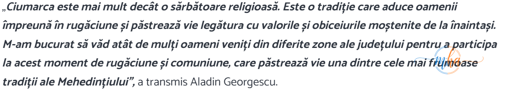
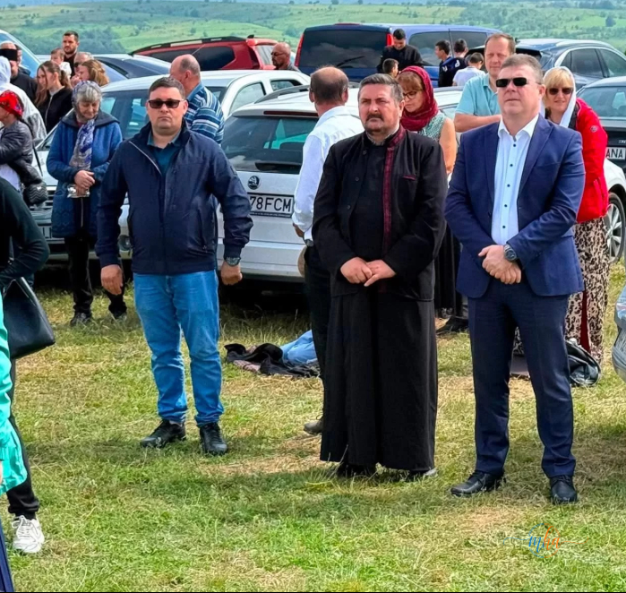

Godeanu, 6 iunie 2026. Pe dealul Chiciora, acolo unde cerul pare mai aproape de pamant, sarbatoarea Ciumarca a readunat astazi, ca in fiecare an, sute de credinciosi veniti din localitatile judetului Mehedinti si din imprejurimi. Un eveniment care nu se anunta, nu se promoveaza — se stie. Se stie din batrani, se transmite in familie, se pastreaza cu sfintenie de generatii intregi.
La Godeanu a avut loc astazi una dintre cele mai vechi si mai respectate traditii religioase pastrate in judetul Mehedinti. Sarbatoarea Ciumarca a adunat pe dealul Chiciora numerosi credinciosi veniti din diferite localitati pentru a participa la un moment de rugaciune si comuniune care se transmite din generatie in generatie.
Slujba arhiereasca pe dealul Chiciora
Foto: MehedintiAzi.ro — PS Nicodim, Episcopul Severinului si Strehaiei, a oficiat slujba arhiereasca la Ciumarca 2026
Slujba religioasa a fost officiata de Preasfintitul Parinte Nicodim, Episcopul Severinului si Strehaiei, inconjurat de un sobor de preoti. Intr-un loc incarcat de spiritualitate si istorie, credinciosii au continuat randuiala mostenita de veacuri de la Sfantul Nicodim de la Tismana, ocrotitorul Eparhiei Severinului si Strehaiei si una dintre cele mai importante personalitati ale monahismului romanesc.
Crucea inalta de pe deal, vizibila de la distanta, a servit si in acest an drept punct de adunare pentru toti cei care au urcat pe Chiciora cu credinta in suflet. Slujba arhiereasca a unit locul, oamenii si cerul intr-un moment de profunda reculegere.
Aladin Georgescu, prezent la Ciumarca


Foto: MehedintiAzi.ro — Aladin Georgescu, presedintele CJ Mehedinti, alaturi de credinciosi la Ciumarca 2026
La invitatia PS Nicodim, la eveniment a fost prezent si presedintele Consiliului Judetean Mehedinti, Aladin Georgescu, care a participat la slujba alaturi de zecile de credinciosi veniti de pe intreg cuprinsul judetului.
„Ciumarca este mai mult decat o sarbatoare religioasa. Este o traditie care aduce oamenii impreuna in rugaciune si pastreaza vie legatura cu valorile si obiceiurile mostenite de la inaintasi. M-am bucurat sa vad atat de multi oameni veniti din diferite zone ale judetului pentru a participa la acest moment de rugaciune si comuniune, care pastreaza vie una dintre cele mai frumoase traditii ale Mehedintiului."
— Aladin Georgescu, presedintele Consiliului Judetean Mehedinti
O traditie cu radacini adanci in istoria Mehedintiului
Ciumarca este o sarbatoare cu o istorie indelungata in judetul Mehedinti, strans legata de veneratia fata de Sfantul Nicodim de la Tismana, cel care a adus monahismul ortodox in aceasta parte a tarii in urma cu sase secole. Traditia aduna an de an, indiferent de vreme, credinciosi de toate varstele — copii tinuti de mana de parinti, batrani care urca dealul pentru a zecea, a douazecea, a treizecea oara.
Locul are o incarcatura aparte: izolat, pe un deal din care privesti jumatate din Mehedinti, cu o cruce uriasa care se vede de departe, Chiciora devine in aceasta zi un loc de pelerinaj viu, autentic, neatins de comercialism si de zgomotul lumii moderne. Este exact genul de traditie pe care oamenii o pastreaza cu sfintenie tocmai pentru ca stiu ca altfel se pierde.
⛪ Ciumarca de la Godeanu — sarbatoare religioasa traditionala
📍 Locatie: Dealul Chiciora, Godeanu, judetul Mehedinti
🙏 Slujba: PS Nicodim, Episcopul Severinului si Strehaiei
📅 Data: 6 iunie 2026
Ciumarca ramane, an dupa an, dovada ca in Mehedinti traditia nu este un cuvant gol. Este un act viu, repetat cu sfintenie, o punte intre generatii care transforma un deal din sudul Romaniei intr-un spatiu sacru, unde rugaciunea se aude mai aproape de cer.